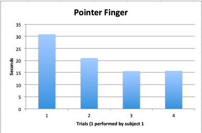

This calculator can be controlled with 4 switches instead of a mouse A switch is a bbutton press that a user can operate with their fingers, toes, head, anything!
Instructions for using the app
For this test, the calculator can be navigated using the key presses A, Q, and Z. A will scan you along to the next button on the calculator.
Q will move you one position up
Z will move you one position down
Finally, you can enter information or press a button on the calculator by pressing D
Test results
To test this app, we had 2 separate subjects perform 4 equations two times. The first time, the subject performed the equations with their pointer finger. The second round, they used their big toe.
Subject 1 was a volunteer, and so only had time to run the test once, but provided insight as to challenges using the switches that might appear intuitive to the designer.
Subject 2 was the designer, and ran the test 3 times.
Both subjects took longer to perform tasks with their big toes than with their pointer fingers.
Subject 1 had no errors. Subject 2 had an error once using their pointer finger and another time using their toe. Both times were a result of Subject 2 confusing the buttons for WSAD gaming controls.
The four equations tested were 1) 78 / 2, 95 + 346, 1 * 23, and 50 - 7.
Below, two charts display the average times for all the trials. Note the times decrease and then level out by columns 3 and 4.
About this app
This calculator can be controlled with 4 switches instead of a mouse A switch is a bbutton press that a user can operate with their fingers, toes, head, anything!
For this test, the calculator can be navigated using the key presses A, Q, and Z. A will scan you along to the next button on the calculator.
Q will move you one position up
Z will move you one position down
Finally, you can enter information or press a button on the calculator by pressing D
To test this app, we had 2 separate subjects perform 4 equations two times. The first time, the subject performed the equations with their pointer finger. The second round, they used their big toe.
Subject 1 was a volunteer, and so only had time to run the test once, but provided insight as to challenges using the switches that might appear intuitive to the designer.
Subject 2 was the designer, and ran the test 3 times.
Both subjects took longer to perform tasks with their big toes than with their pointer fingers.
Subject 1 had no errors. Subject 2 had an error once using their pointer finger and another time using their toe. Both times were a result of Subject 2 confusing the buttons for WSAD gaming controls.
The four equations tested were 1) 78 / 2, 95 + 346, 1 * 23, and 50 - 7.
Below, two charts display the average times for all the trials. Note the times decrease and then level out by columns 3 and 4.
